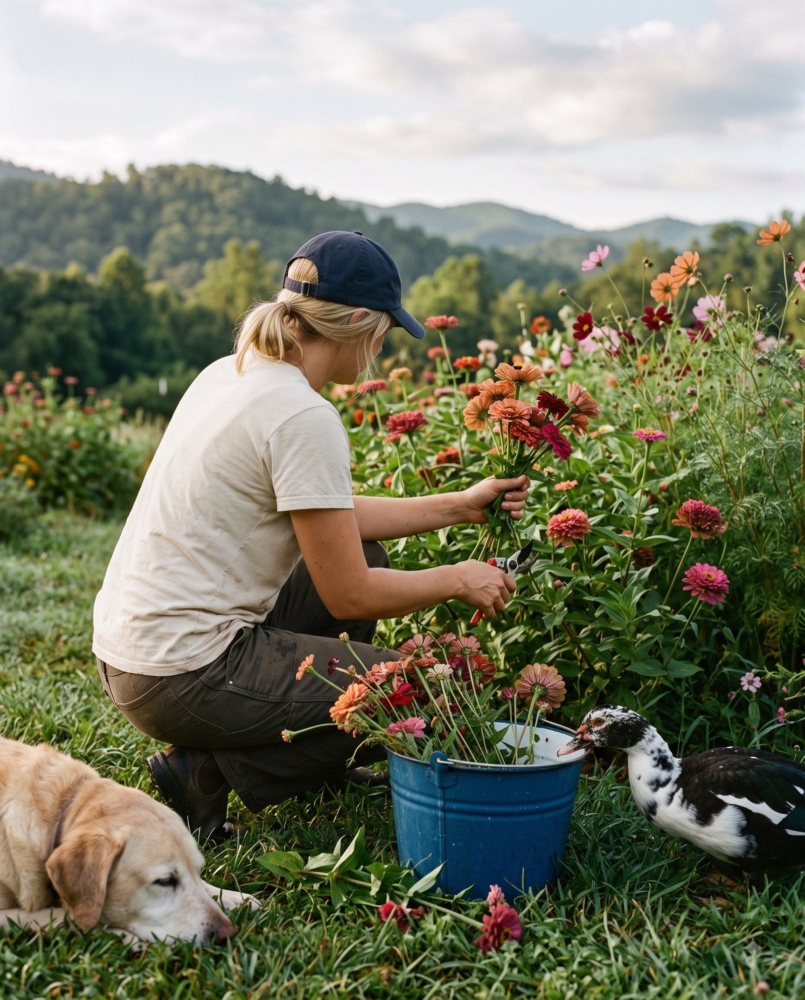
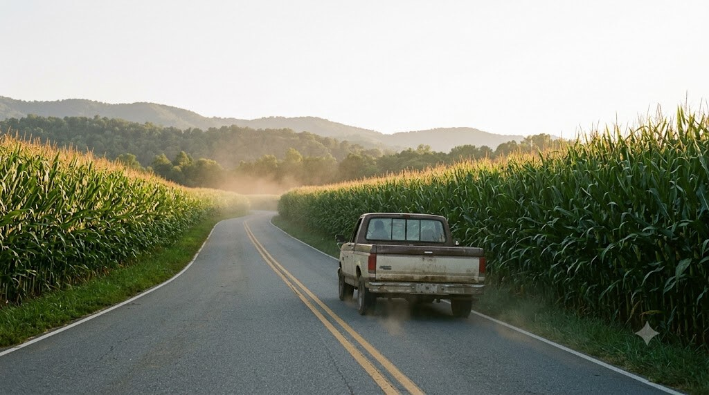
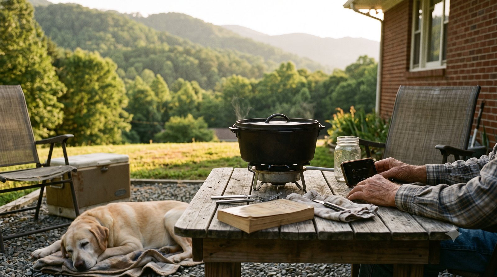

I'm Caleb. My wife Sarah and I started this little corner of the internet because we kept taking pictures of stuff in the driveway and didn't really have anywhere to put them.
I run a landscaping company. Spent a lot of years on crews working high-end properties — a couple NASCAR guys' places out toward Mooresville, a few others — before I went out on my own. Sarah went to App State for teaching and now stays home with our kids. Her dad raced short-track for years up at Wilkesboro and Hickory, and the radio in the garage was his father's before that. So the race on Saturday isn't a new thing for us. It's just always been there.
Most weekends I'm under a hood and Sarah's got the smoker going. Friends drift in and out. Crank finds shade. The duck gets into something he shouldn't. That's about the size of it.




